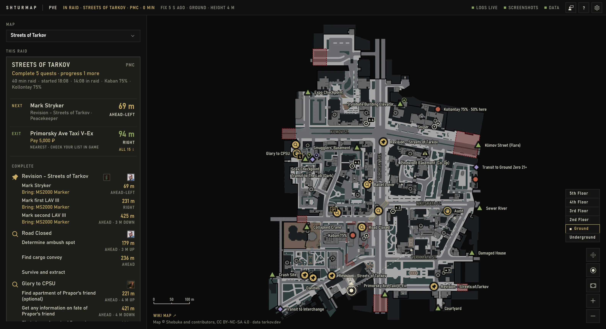
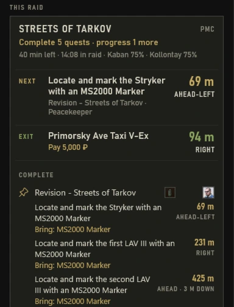
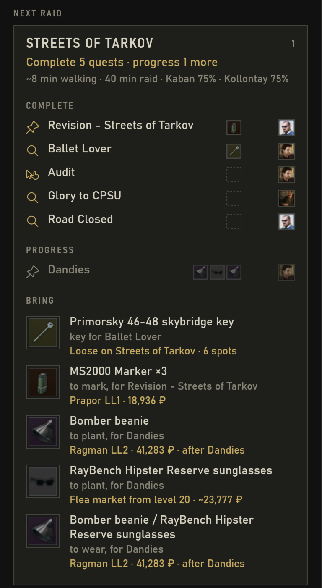
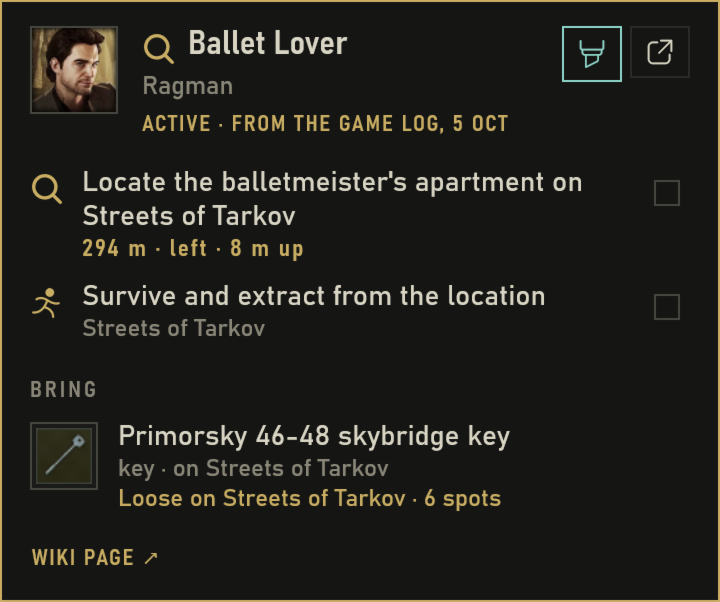

A second-monitor map for Escape from Tarkov.
Your active quests' objectives, the extracts and your position on the map of the raid you're in. What you'd otherwise look up in the wiki, in one window.
Quest status comes from the game's own log files. Your position comes from the name of the screenshot the game saves when you press your screenshot key. No macros, no input to the game, no access to its process.
Press your screenshot key. You're on the map.
The game writes your position into the screenshot's file name. Shturmap reads it, drops your marker and sorts objectives by distance and direction. No clicks.

- 1Raid, side, age of your position.
- 2Next objective: distance, direction.
- 3Nearest extract for your side.
- 4Objectives, by quest type.
- 5Floor, from your height.
- 6You, from your last screenshot.
- 7The wiki's map, one click away.

The quests you can work on here, the ones you picked first, ordered by the nearest objective. Each line says how far, which way, how far up or down, and what to bring for it.
Pick the map that gets the most done.
Maps ranked by how many of your quests they finish or move on. What to bring, and where to get it: trader, flea, barter or loose on the map.
Pick the quests you want to do, and they come first: on the map and in what to bring. When the raid starts loading, Shturmap shows the kit to check, while you can still cancel.

The quest on one card.
Objectives, keys and items for any quest, one hover away. Pop out a card and its distances stay live while you play. The wiki is one click away for the rest.
Quests track themselves.
Started, finished, failed: Shturmap reads it from the game's own log files. Nothing to tick off.
Quests you started before your oldest log aren't known.

It only knows what you know.
Everything on the map comes from files the game writes for you, or from public data. Here they are.
2026-01-01[13-35]_40.00, 2.50, 120.00_0.01000, 0.99900, -0.04000, 0.02000_14.13 (0).png
Written by the game when you press your screenshot key; Battlestate's own support article on reporting a bug describes these coordinates in the name. Shturmap reads the name; the image stays unopened.
scene preset path:maps/city_preset.bundle"type": 10, "templateId": "6391…1b78 description""keyName": "MakeScreenshot""Language": "en"tasks · maps · items · map artworkshturmap/shturmap · latest version- touches the game process or its memory
- sends keystrokes or mouse input
- captures your screen or draws over the game
- changes game files
- shows you anything about other players
- shares your position with anyone, or takes a screenshot for you
- sends anything about you, unless you send a report or allow crash reports
Your marker moves when you press your screenshot key. Nothing else moves it.
Not made or endorsed by Battlestate Games. Its License Agreement (section 4.3.4) lets Battlestate decide which outside software it permits, so there is no guarantee against sanctions: use Shturmap at your own risk. More in the questions below.
Native Windows app. No Electron.
Written in C# on .NET and WinUI 3, with the map drawn on your GPU. No browser engine, no web page in a wrapper. It opens in under a second.
Free and open source (MIT). Windows 10 and 11.
Install it with Shturmap-Setup.exe from the GitHub releases; it keeps itself up to date. Shturmap is in private testing, so expect rough edges. Something wrong or missing? Tell us from the app, with the feedback button at the top right.
What players ask.
New to Tarkov, or to Shturmap
What is Shturmap, and what isn't it?
A second window for Escape from Tarkov. Before a raid: which map gets the most of your active quests done, and what to bring. In the raid: the map with your objectives, the extracts and the spot where you took your last screenshot.
It isn't a live position: your marker shows where you were when you last pressed your screenshot key. It shows nothing about other players, and it does nothing in the game for you.
How does it know where I am?
When you press your screenshot key, the game saves a screenshot and writes your position and facing into its file name. Shturmap reads that name, never the image, and moves your marker there. It reads which key is yours from the game's settings.
Nothing else moves the marker. Press the key again when you want a fresh position; an old one is marked with its age.
PvE or PvP?
Both, and the seasonal mode. Shturmap reads the mode from the game's log and loads that mode's quests and data. For PvP, see the question about fairness below.
Which maps does it cover?
The maps tarkov.dev covers. The Lab, Labyrinth and Icebreaker are drawn from tarkov.dev's top-down renders; when those can't be loaded, as a plain 10 m grid with your position, objectives and extracts.
Does it work in my language?
Quest, map and item names follow your game's language, from tarkov.dev; where tarkov.dev has no texts in it, they are in English. Shturmap's own words are English.
What does it cost, and what does it send?
Nothing. It is free and open source (MIT).
It sends nothing about you or your game unless you send a report or allow crash reports. Its other traffic downloads public data and map artwork, and asks GitHub whether there's a newer Shturmap (you can turn that off). What a report holds and who receives it is in the privacy notice.
What do I need, and how do I install it?
64-bit Windows 10 (version 2004 or later) or Windows 11. Download Shturmap-Setup.exe from the GitHub releases and run it: it installs for your Windows user only, without admin rights. The installer isn't signed, so Windows warns about it; click More info, then Run anyway.
Shturmap keeps itself up to date. It checks at start and every 6 hours, downloads in the background and applies the update the next time you start it, never during a raid. Settings (the gear at the top right) → Updates switches that to Tell me only or Off.
It finds the game by itself; if it doesn't, choose the game folder in settings. Without the game on the PC you can still browse the maps. To remove Shturmap, use Windows Settings → Apps, or Uninstall Shturmap in its settings, which can delete its data too.
Something's wrong or missing?
Tell us from the app: the feedback button at the top right. No account needed, and you can see exactly what's sent before you send it. Shturmap is in private testing, so expect rough edges.
For experienced players
What does it read, and what does it never do?
It reads the file names of your screenshots, the game's application and push-notification logs, Control.ini and Game.ini, and public data from tarkov.dev; the list is under Boundaries. It never touches the game process or its memory, sends no keystrokes or mouse input, doesn't capture your screen or draw over the game, and changes no game files.
Is this allowed? Can I get banned?
Battlestate hasn't said anything about tools that read screenshot names, for or against, and we found no verified ban for using one, though tools like this have been around since at least 2023. That is our research as of 3 October 2026, not a promise.
Battlestate's License Agreement (section 4.3.4) forbids outside software that "captures, collects, counts or otherwise 'retrieves' information reproduced or stored by" the game, unless Battlestate permits it at its own discretion, and it hasn't permitted any tool like this. Read literally, that covers every companion app, Shturmap included. The same words speak against tools players have used for years: TarkovMonitor, by the makers of tarkov.dev, has watched the game's log files and read positions from screenshots since 2022, and RatScanner has taken a screenshot to identify an item since 2020. Neither has Battlestate's permission either. So there is no guarantee against sanctions, for them or for Shturmap: use it at your own risk.
Shturmap is an unofficial fan project, not made or endorsed by Battlestate Games.
Where do the coordinates come from?
From the game. It writes them into every screenshot's file name, and Battlestate's own support article on reporting a bug says so: "The name of the screenshot contains the coordinates of the place where the screenshot was taken." That is the source of the coordinates, not an endorsement of Shturmap.
Isn't a map with my position unfair in PvP?
Some players think so; others compare it to keeping a map open on a second screen. Shturmap shows only where you were when you last pressed your screenshot key, and only to you. It is at its most useful for learning maps and in PvE.
Can I check what it does?
Yes. The code is open source on GitHub under the MIT licence. A test fails if the code ever uses the Windows functions for reading another program's memory, sending input, hooking or capturing the screen.
What if Battlestate takes the coordinates out of the screenshot names?
Then Shturmap shows no position, and the rest keeps working: maps ranked by what you can get done, what to bring, quest cards, and the map with your objectives and the extracts.